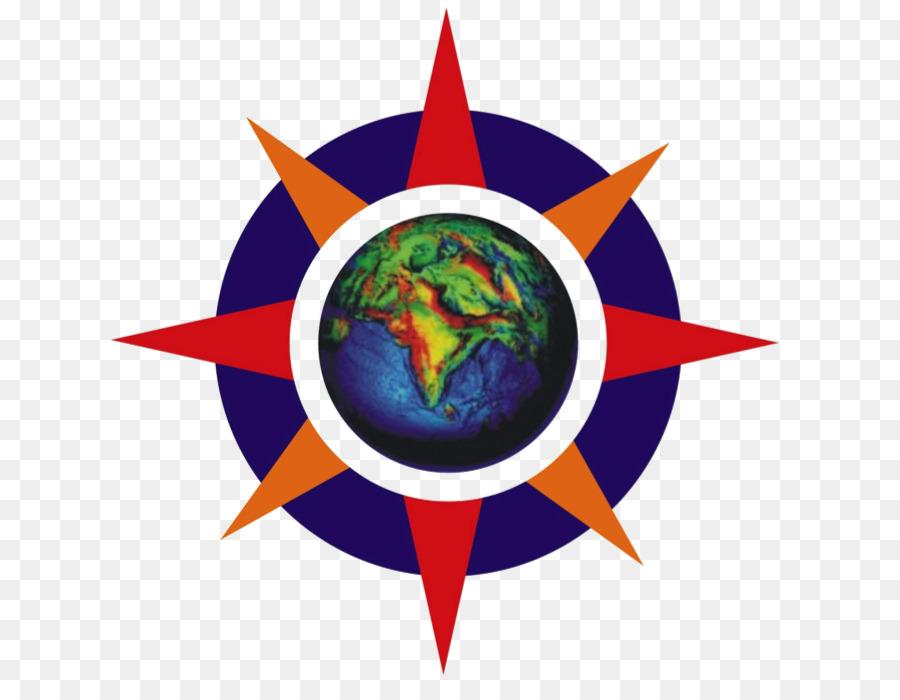

Education
Master of Science
STATE UNIVERSITY OF NEW YORK, BINGHAMTON
I am currently pursuing M.S. in Computer Science here. I expect to graduate in
May 2021. GPA: 3.7.
Course Work: Operating System , Data Mining, Programming language,Design Pattern,Introduction to Distributive
System,Design and Analysis of Computer Algorithms.
Bachelor of Engineering
PES INSTITUTE OF TECHNOLOGY, BANGALORE SOUTH CAMPUS

.
I started undergrad here in Fall 2013 and graduated in Spring 2017 with B.E. in
Electronics & Communication. GPA: 3.64
Work Expierence
Larson and Toubro Infotech Pvt Ltd
Invest to Sunset Team
-
Worked in Agile project under BIWS (Business Integrated Work Station) team to develop, deploy, test and
integrate the Micro Services.
- Developed micro services using IUX core Node and Sencha Ext JS Frameworks for micro views which are
integrated under BIWS to serve for billing functionalities and eliminating the CL portal dependencies.
- Worked as a Scrum Master Substitute for 3 months which involved roles such as iteration planning, feature
creation, conducting retrospective, daily stand up monitoring and PI planning.
APCS (Automated Program Collecting System) March 2018 - September 2018
APCS (Automated Program Collecting System)
-
Worked with team size of 12 in an Agile project environment. The application is web-based program for
location and program collection which is used by Business Insurance system users for the rating system based
on the data uploaded for each of the entries.
-
Involved in enhancing Infragistics grids to jQuery -grid controls, converting the WCF services to Web API
using #C language and making the App Cross Browser Compatible.
LPE (Legacy Portal Elimination)
- Worked on CNS E-Quote with team size of 10 in an Agile project environment. The application is web-based
Rating system which is used in Business Insurance for supporting Construction Markets .
- Involved in making the web app Cross Browser Compatible and eliminating the portal dependencies which
where rewritten from vb script to C# back end. Also Awarded Pat on Back as an appreciation for the
Innovative thinking and quickly solving problems.
Projects
Distributed, Fault-Tolerant, Highly Available NoSQL Database (Java, Google protobuf)
- An eventually-consistent distributed key-value database like Cassandra.
Implements read repair and hinted handoff.
Chandy-Lamport Snapshot Algorithm (Java ,Google protobuf)
- A multithreaded application which records consistent global state of an asynchronous distributed banking
system. The banking system comprised of branches which continuously performed random transactions with each
other.
E-Commerce online shopping cart (ASP .Net, Entity, MySQL, #C, MVC, IIS)
- Designed and developed an e-commerce web app in 3 layered architecture in .net with #C language with
database operations developed in Stored Procedures.
- User profile designed with Asp .net and equipped with shopping cart, order details, printing order
details, payments secured with web services .Admin profile is designed with MVC, entity framework and
equipped Deployed the application online in Internet Information Server (IIS).